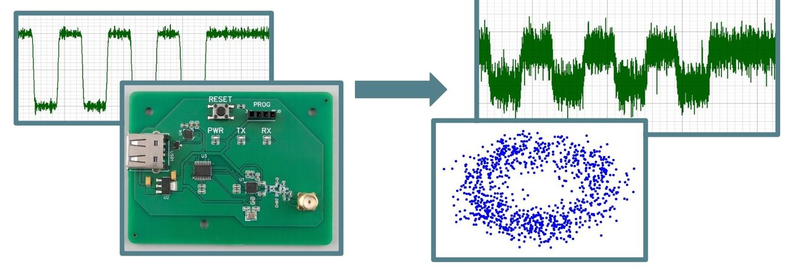
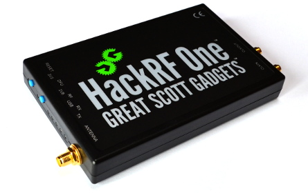

Two days · Live targets
Software Defined Radios 101
Intercept. Demodulate. Decode. Attack.
Wireless is the one attack surface most security teams never touch, because the tooling looks like maths and the maths looks like a wall. This training takes it apart across two days — from your first look at the spectrum to compromising a live device over the air.
Format
Two days
Hands-on throughout
Level
Beginner
Hands-on throughout
Price
$2,500
per student
Dates & venue
Jan 23–24, 2027
AC Hotel Bellevue, WA
Abstract
SDR 101 closes the gap between theoretical radio physics and practical RF exploitation, walking students through the complete RF kill chain: intercept, demodulate, decode, attack.
You work on real software defined radio hardware and real digital signal processing frameworks from the first afternoon. You'll learn to navigate the electromagnetic spectrum, capture raw baseband to disk, pull bits out of a waveform by hand, build your own receivers in GNU Radio, and then transmit — replay, jamming, and forged packets of your own construction. Either edition ends the same way: a custom-built wireless device on the bench and nothing but your own tooling to break it.
Who it's for
RF beginners across the cyber security and engineering fields. No prior RF experience is required — the course starts at wave propagation and builds from there.
Red team & pentest
Expand your physical-layer toolkit, compromise IoT systems, and breach airgaps.
Blue team & SOC
Security analysts and IT professionals who need to understand how attackers exploit RF vulnerabilities and compromise wireless systems.
Engineers & developers
Work at the intersection of hardware and software, build custom DSP tools, or secure your own RF-enabled products.
EW & SIGINT
Move beyond proprietary vendor solutions and start working in flexible, open-source SDR frameworks.
Directors & PMs
Technical leads who need a practical understanding of RF and SDRs to write requirements and guide procurement.
Industry veterans
Add RF exploitation to an established skill set.
What you'll
be able to do
Intercept
Drive SDR hardware directly — gain staging, offset tuning, and the spectral artefacts the hardware itself creates. Scan wideband spectrum with sweeping and FFT stitching to find emitters, then record clean raw baseband without clipping or aliasing.
Demodulate
Build real-time DSP pipelines in GNU Radio that filter, mix, resample and demodulate, taking a signal from raw IQ down to baseband and out to audio, a file, or a network socket.
Decode
Read the anatomy of a transmission — preamble, sync word, payload — and extract bits by hand. Work through the line coding and modulation schemes that make real protocols awkward: Manchester, differential, PSK and M-ary FSK.
Attack
Transmit safely and deliberately: replay attacks, targeted spot jamming, and protocol injection using modulated baseband files you generate yourself from raw binary.
Book
Two days, one radio, and a device on the bench at the end of it. $2,500 per student — early bird RSHMEL takes $250 off.
Reserve your seatOutline
Course outline
One kill chain across two days. Pre-course video lectures carry the theory, so class time goes straight to the radio.
The two days
Students complete pre-course video lectures and install the student VM before arriving, which buys back the theory day and puts them on hardware from the first session.
Day 1
Theory to spectrum
Students move from pre-course theory into hands-on spectrum engagement: hardware control and gain staging, hunting rogue transmissions across unknown bands, FFT resolution tradeoffs, capturing and inspecting raw baseband, manual packet reverse engineering, wideband sweeping, and a first GNU Radio flowgraph — a real-time spectrum analyser with interactive GUI controls. The day closes on filter design and mixing, isolating a signal at baseband.
Day 2
Demodulation to capstone
Demodulation and resampling maths, building live tunable receivers with real-time output. Out-of-tree modules and network sinks widen the toolkit against progressively harder signals. Then active operations: the legalities, safety and mechanics of transmitting, replay attacks, targeted spot jammers, protocol spoofing and forged binary packets. The course ends on the hardware capstone.
Capstone hardware
Students are handed a custom-built wireless printed circuit board and must run the full RF kill chain against it — find it, characterise it, decode it, and compromise the system.

Before you
arrive
Prerequisites
Students complete a set of pre-course video lectures and install the student VM before arriving; the instructor sends both out ahead of time. No prior RF experience is required.
What to bring
A laptop able to run the student VM, with a free USB port for the radio. And your favourite caffeine.
Provided on the day: SDR hardware, all training material, and the capstone target. Audience skill level is beginner.
Certificate
Every student who completes the training receives a continuing education certificate in both forms — a printed copy and a digital version you can file for CPE records or add to your LinkedIn profile.
Your trainer

Richard Shmel
RNS Technology Solutions
Richard designed and delivers SDR 101, the beginner-facing RF exploitation course built around real radios, open-source DSP frameworks, and a custom wireless target he builds himself.
The course reflects how he teaches: no proprietary black boxes, no slide-only sections, and every concept put straight onto hardware.
- Teaches
- SDR
- DSP
- RF Exploitation
- GNU Radio
- SIGINT
Radio hardware
Take a radio home — optional
SDR hardware is provided for use in class, so nothing is required to take part. If you want your own unit to keep, you can buy the radio the course is built around.

Optional · HackRF One bundle — $600
An optional add-on to your registration on RegFox, chosen when you book. Includes the HackRF One, antenna, metal case, and an upgraded crystal oscillator. Yours to keep.
Students may bring their own HackRF One.
Register

Upcoming dates
Saturday 23 – Sunday 24 January 2027 · AC Hotel Bellevue, WA — two-day condensed. Registration open.
Two days
$2,500
Per student. Pre-course video lectures and student VM included.
Early bird RSHMEL $250 off
Includes SDR hardware, all training material and the capstone target. Cancellation terms follow the standard Switchback training policy.